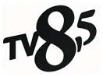
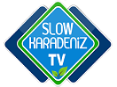

|
|
-
ULUSAL KANALLAR
IPTV Player
TRT 1 HD+
TRT 1 HD
SHOW HD+
SHOW HD
ATV HD+
ATV HD
STAR HD+
STAR HD
KANAL D HD+
KANAL D HD
FOX HD+
FOX HD
TV8 HD+
TV8 HD- 
TV8.5 HD+
KANAL7 HD+
KANAL7 HD
TEVE2 HD+
BEYAZ HD+
BEYAZ HD
360 HD+
SHOW MAX
TV A2
TLC HD+
DMAX HD+
TRT2 HD+
TRT2 HD
TRTTURK HD+
TRTAVAZ HD+
TRTMUZIK HD+
BELGESEL KANALLAR

TRTBELGESEL HD+
TGRT BELGESEL
NAT GEO HD
HISTORY HD
DISCOVERY HD
DISCOVERY SCFI HD
INVESTIGATION DISCOVERY HD
NAT GEO WILD HD
BBC EARTH HD
BEIN IZ HD
NTN BELGESEL HD
HABER KANALLARI
SÖZCÜTV HD
SÖZCÜTV HD
HALKTV HD
HALKTV HD
TELE 1
TELE 1
KRT HD
KRT HD+
FLASH HABER
NTV HD+
HABERTURK HD+
CNN TURK HD+
BLOOMBERGHT HD+
HABERGLOBAL HD+
TRTHABER HD+
ULUSAL KANAL
TGRT HABER
TV 24
T.B.M.MECLIS TV
COCUK KANALLARI

TRTCOCUK HD+
MINIKA COCUK
MINIKA GO
DISNEY CHANNEL
CARTOON
SINEMA KANALLARI
SINEMA MIX
TÜRK SINEMASI
YESILCAM KOMEDI
YESILCAM NOSTAJI
SINEMA TV 1
SINEMA TV 2
SINEMA TV 3
SINEMA TV 4
SINEMA TV 5
SINEMA TV 6
SINEMA TV 7
SINEMA TV 8
SINEMA TV 9
SINEMA TV 10
SINEMA TV 11
SINEMA TV 12
SINEMA TV 13
SINEMA TV 14
SINEMA TV 15
SINEMA TV 16
SINEMA TV 17
SINEMA TV 18
SINEMA TV 19
SINEMA TV 20
SPOR KANALLARI
BEINSPORT 1 HD
BEINSPORT 2 HD
BEINSPORT 3 HD
BEINSPORT 4 HD
BEINSPORT MAX 1 HD
BEINSPORT MAX 2 HD
BEINSPORT HABER HD
S-SPORT HD
S-SPORT 2 HD
SMARTSPOR HD
SMARTSPOR 2 HD
EUROSPORT 1 HD
EUROSPORT 2 HD
TRTSPOR HD
TRTSPOR HD
TRTSPOR YILDIZ HD
A-SPOR HD
CBC SPORT
YEREL KANALLAR
CEM TV
DRT DENIZLI TV
DEHA TV
TV DEN
PAMUKKALE TV
EGE TV
TV 5
TGRT EU
KANAL B
CAN TV- 
SLOW KARADENIZ TV 
MAVI KARADENIZ TV
ISTANBUL TV
UCANKUS
CAY TV